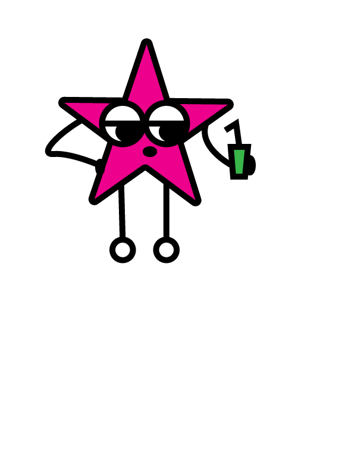
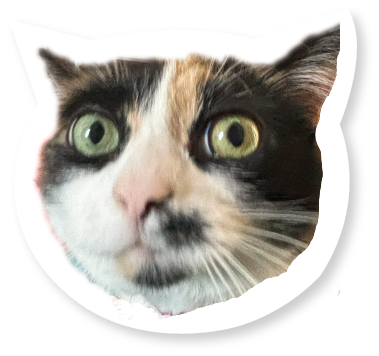
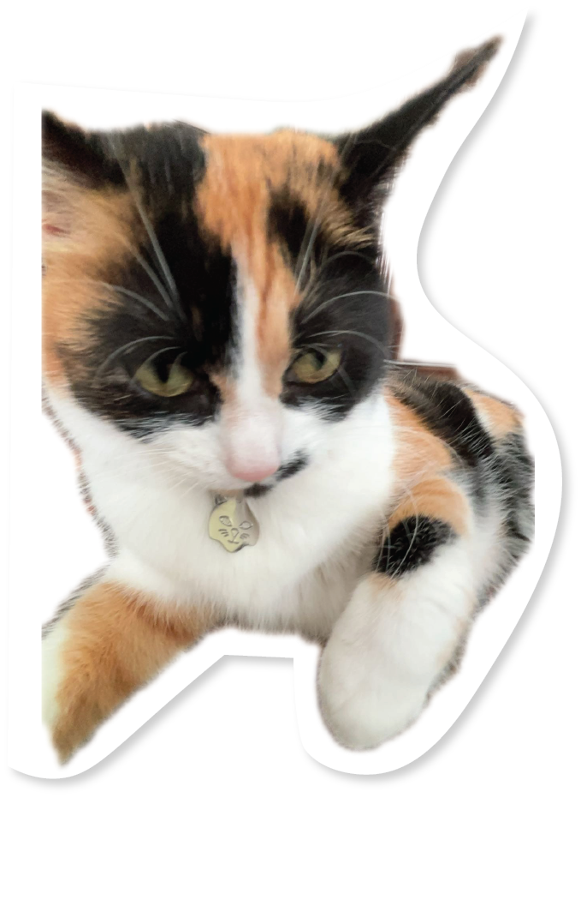
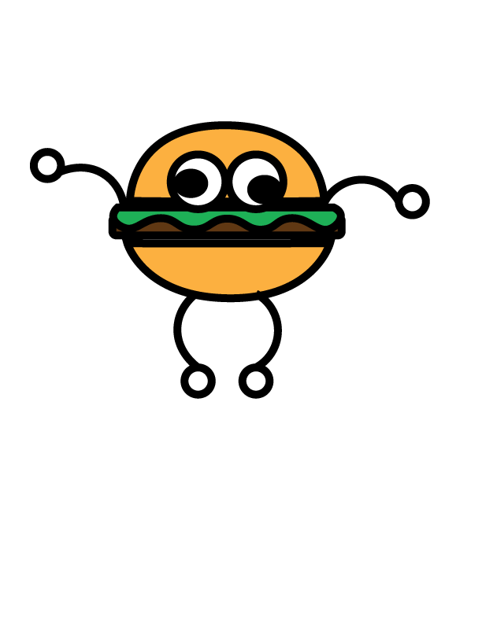

Graphic & interaction designer working across print, identity and web — I build quiet systems for loud ideas.


✦
est.2026
 ♥
♥About
Me
I'm a designer who likes problems that don't have an obvious shape yet — new products, rebrands, motion, etc.
Before this I studied New Media Design at RIT, and worked with teams at Habits365Greek.
- Tools
- Figma, After Effects, Framer, Illustrator, Photoshop
- Currently
- Freelance + Open to full-time

Selected work — hover to preview, click to read
A few things I've made.
 ▶
▶Reel
Click a video to play — slide for more